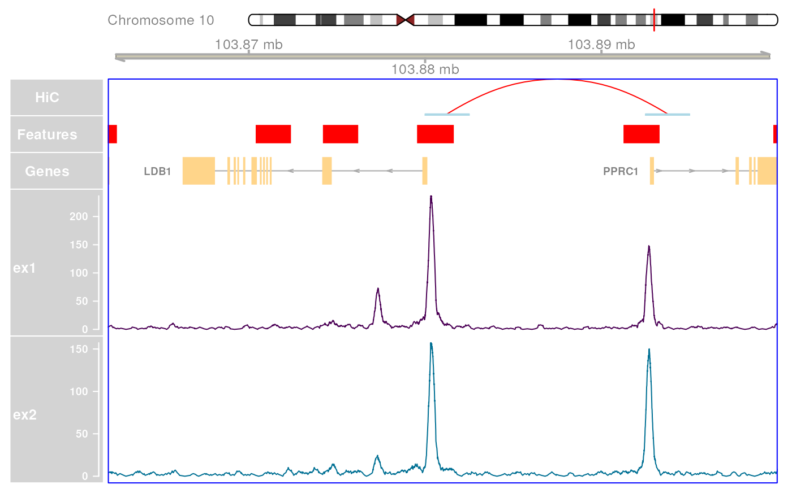

Plot a region with showing HiC, Features, Genes and Coverage
plotHFGC(
gr,
hic,
features,
genes,
coverage,
annotation,
zoom = 1,
shift = 0,
max = 1e+07,
axistrack = TRUE,
cytobands,
covtype = c("l", "heatmap"),
linecol = c(),
gradient = hcl.colors(101, "viridis"),
hiccol = list(anchors = "lightblue", interactions = "red"),
featcol,
genecol,
annotcol,
highlight = "blue",
hicsize = 1,
featsize = 1,
genesize = 1,
covsize = 4,
annotsize = 0.5,
hicname = "HiC",
featname = "Features",
featstack = c("full", "hide", "dense", "squish", "pack"),
collapseTranscripts = "auto",
maxTrans = 12,
ylim = NULL,
...,
fontsize = 12,
cex.title = 0.8,
rotation.title = 0,
col.title = "white",
background.title = "lightgray",
title.width = 1.5
)The range(s) of interest. Must be on a single chromosome
Any HiC interactions to be included as a GenomicInteractions object. If not supplied, no HiC track will be drawn.
A named GRangesList object containing regulatory features in
each list element. Features will be drawn on a single track with colours
matching those provided in featcol. If not included, no feature track
will be drawn
A GRanges object with exon structure for each transcript/gene. If not included, no track will be drawn for gene/transcript structure
A named list of BigWigFileList objects containing the primary tracks to show coverage for. Each list element will be drawn on a separate track, with elements within each BigWigFileList shown on the same track. List names will become track names. Alternatively, a single BigWigFileList will plot all individual files on separate tracks. If not included, no coverage tracks will be drawn.
Annotations for the coverage track(s). A single GRangesList if coverage is a BigWigListList. If coverage is supplied as a list of BigWigFileLists, a named list of GRangesList objects for each coverage track being annotatated. Names must match those given for coverage.
Multiplicative factor for zooming in and out
Shift the plot. Applied after zooming
The maximum width of the plotting region. Given that the width of the final plotting window will be determined by any HiC interactions, this argument excludes any interactions beyond this distance. Plotting can be somewhat slow if any long range interactions are included. Ignored if no HiC interactions are supplied.
logical. Add an AxisTrack()
Cytogenetic bands to be displayed on each chromosome
The plot type for coverage. Currently only lines ("l") and heatmaps ("heatmap") are supported
If passing a BigWigFileList to coverage, a vector of colours. If passing a list of BigWigFileList objects to coverage, a list of colours with structure that matches the object being passed to coverage, i.e. a named list of the same length, with elements who's length matches each BigWigFileList. Only used if covtype = "l".
Colour gradient for heatmaps
list with names "anchors" and "interactions". Colours
are passed to these elements
Named vector (or list) of colours for each feature
Named vector (or list) of colours for each gene category
Colours matching the coverage annotations
Outline colour for the highlight track. Setting this to
NULL will remove the highlight
Relative sizes for each track (hic, features, genes, coverage & annotation)
Names displayed in the LHS panel
Stacking for the fature track
Passed to GeneRegionTrack for the
genes track. Defaults to "auto" for automatic setting. If the number of
transcripts to be plotted is > maxtrans, the argument will be
automatically set to "meta", otherwise this will be passed as FALSE which
will show all transcripts.
Only used if collapseTranscripts is set to "auto".
If a numeric vector, this will be passed to all coverage tracks. Alternatively, a named list of y-limits for each coverage track with names that match those in each element of the coverage list.
Passed to DataTrack for the coverage tracks only.
Useful arguments may be things like legend
Applied across all tracks
Passed to all tracks
Passed to all tracks
Passed to all tracks
Passed to all tracks
Expansion factor passed to plotTracks, and
used to widen the panels on the LHS of all tracks.
Can have unpredictable effects on the font
size of y-axis limits due to the algorithm applied by plotTracks
A Gviz object
Convenience function for plotting a common set of tracks. All tracks are optional. For more fine control, users are advised to simply use Gviz directly.
The primary tracks defined in this function are H (HiC), F (features), G (genes), and C (coverage). Axis and Ideogram tracks are an additional part of this visualisation
Use all tracks specific to this dataset to generate a simple visualisation. In descending order the tracks displayed will be:
HiC Interactions (if supplied)
Regulatory features
Genes/genes
Coverage tracks as supplied
All tracks are optional and will simply be omitted if no data is supplied. See individual sections below for a more detailed explanation of each track
If wanting a single track of genes, simply pass a GRanges object in the format specified for a GeneRegionTrack. Passing a GRangesList with the same format will yield an individual track for each list element, with each track shown by default as a separate colour. This can be used for showing Up/Down-regulated genes, or Detected/Undetected genes.
If passing a BigWigFileList for the coverage track, each file within the object will be drawn on a separate track. If specified, the same y-limits will be applied to each track If passing a list of BigWigFileList objects, each list element will be drawn as a single track with the individual files within each BigWigFileList overlaid within each track.
Cytogenetic band information must be in the structure required by IdeogramTrack, with data for both GRCh37 and GRCh38 provided in this package (grch37.cytobands, grch38.cytobands).
A highlight overlay over the GRanges provided as the gr argument will be
added if a colour is provided. If set to NULL, no highlight will be added.
The available arguments for displaying HiC Interactions are defined below.
If hic is supplied, a single InteractionTrack
will be added displaying
all interactions with an anchor within the range specified by gr.
Only interactions with an anchor explicitly overlapping gr will be shown.
If no interactions are found within gr, the track will not be displayed.
The plotting range will expand to incorporate these interactions, with
the paramater max providing an upper limit on the displayed range.
This is the GInteractions object required for inclusion of
a HiC track in the final output. Will be ignored if not supplied
Determines the colours used for display of anchors and interactions
Relative size of the track compared to others
The name to display on the LHS panel
The maximum width of the plotted region. If multiple long-range
interactions are identified, this provides an upper limit for the display.
This defaults to 10Mb.
If wanting to add an AnnotationTrack with regions defined as
'features', the following arguments are highly relevant.
All are ignored if features is not provided.
A named GRangesList. Each element will be considered as
a separate feature and drawn as a block in a distinct colour. Any mcols
data will be ignored.
A named vector (or list) providing a colour for each
element of features
The name to display on the LHS panel
Stacking to be applied to all supplied features
Relative size of the track compared to others
To display genes or transcripts, simply provide a single GRanges object if
you wish to display all genes on a single track.
The mcols element of this object should contain the columns feature,
gene, exon, transcript and symbol as seen on the
GeneRegionTrack help page.
Alternatively, a GRangesList can be provided to display genes on separate
tracks based on their category.
This can be useful for separating and colouring Up/Down regulated genes in a
precise way.
All elements should be as described above.
Again, all parameters associated with this track-set will be ignored of no
object is supplied to this argument.
A GRanges or GRangesList object as described above
A single colour if supplying a GRanges object, or a
named vector/list of colours matching the GRangesList
Relative size of the track compared to others
Passed to all tracks. See the GeneRegionTrack
section in settings for detail regarding possible arguments.
If genes is a GRangesList, can be a named vector/list with names
matching the names of the genes object.
This section contains the most flexibility and can take two types of input.
The first option is a BigWigFileList, which will lead to each BigWig file
being plotted on it's own track.
An alternative is a list of BigWigFileList objects.
In this case, each list element will be plotted as a separate track,
with all individual BigWig files within each list element
overlaid within the relevant track.
In addition to the coverage tracks, annotations can be added to each
BigWigFileList in the form of coloured ranges, indicating anything of the
users choice. Common usage may be to indicate regions with binding of a
ChIP target is found to be detected, unchanged, gained or lost.
A BigWigFileList or list of BigWigFileList objects.
A single BigWigFileList will be displayed with each individual file on a
separate track with independent y-axes. Each element of the
BigWigFileList must be named and these names will be displayed on the
LHS panels
A list of BigWigFileList objects will be displayed with each list element
as a separate track, with any BigWig files overlaid using the same
y-axis. The list must be named with these names displayed on the LHS
panel. Each internal BigWig within a BigWigFileList must also be named.
Currently only lines (covtype = "l") and
heatmaps (covtype = "heatmap") are supported. Colours can be
specified using the arguments below
Can be a single colour applied to all tracks, or a named
vector (or list) of colours. If coverage is a single BigWigFileList,
these names should match the names of this object exactly.
If coverage is a list of BigWigFileList objects, linecol should be
a list with matching names. Each element of this list should also be a
named vector with names that exactly match those of each corresponding
BigWigFileList.
A colour gradient applied to all heatmap tracks. No specific structure is required beyond a vector of colours.
Relative size of the tracks compared to others
Can be a vector of length 2 applied to all coverage tracks.
Alternatively, if passing a list of BigWigFlieList objects to the
coverage argument, this can be a named list of numeric vectors with
names matching coverage
Each BigWigFileList needs annotations to be passed to
this argument as a named GRangesList, with names being used to
associate unique colours with that set of ranges. If coverage is a
BigWigFileList a simple GRangesList would be supplied and a single
'annotation' track will appear at the top of the set of coverage tracks.
If coverage is a list, then a named list of GRangesList objects
should be supplied, with each being displayed above the corresponding track
from the coverage object.
A vector of colours corresponding to all names within all
GRangesList elements supplied as annotation. It is assumed that the
same colour scheme will be applied to all annotation tracks and, as such,
the colours should not be provided as a list which matches the
coverage tracks. Instead, every named element anywhere in the annotation
GRanges, across all of the tracks must be included as a colour
Relative size of the tracks compared to others
# \donttest{
library(rtracklayer)
## Make sure we have the cytobands active
data(grch37.cytobands)
## Prepare the HiC, promoter & transcript information
data(ex_hic, ex_trans, ex_prom)
ex_features <- GRangesList(Promoter = ex_prom)
featcol <- c(Promoter = "red")
## Prepare the coverage
fl <- system.file(
"extdata", "bigwig", c("ex1.bw", "ex2.bw"), package = "extraChIPs"
)
bwfl <- BigWigFileList(fl)
names(bwfl) <- c("ex1", "ex2")
bw_col <- c(ex1 = "#4B0055", ex2 = "#007094")
## Define the plotting range
gr <- GRanges("chr10:103862000-103900000")
## Now create the basic plot
plotHFGC(
gr,
hic = ex_hic, features = ex_features, genes = ex_trans, coverage = bwfl,
featcol = featcol, linecol = bw_col, cytobands = grch37.cytobands
)
plotHFGC(
gr,
hic = ex_hic, features = ex_features, genes = ex_trans, coverage = bwfl,
featcol = featcol, linecol = bw_col, cytobands = grch37.cytobands,
maxTrans = 1
)

# }